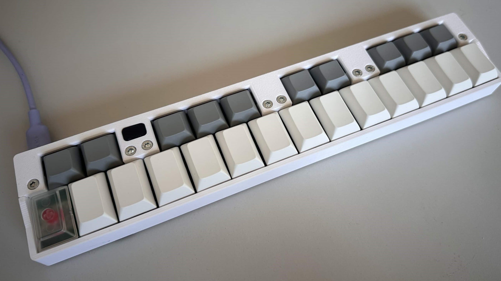
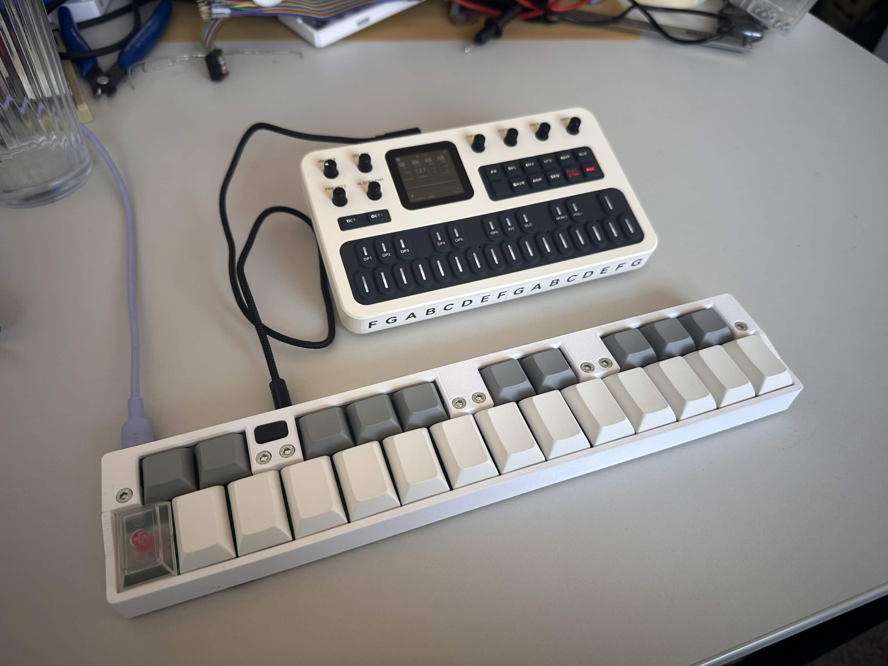

A compact midi keyboard made with Cherry MX Low Profile keyswitches and a CH32V003

My keyboard connected to the m-vave FM-1 synth.
The keyboard consists of 2 circuit boards, the smaller one has 5 keys and the wider one 7. Both of the modules have their own MCU and communicate between each other over I2C. // add on the end: for multiple reasons. 1. keeping the dimentions between 10x10cm makes it very cheap to manufacture